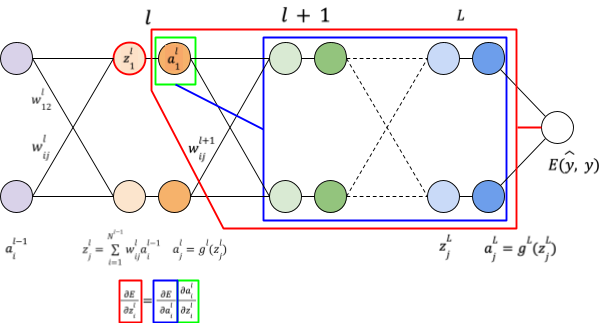
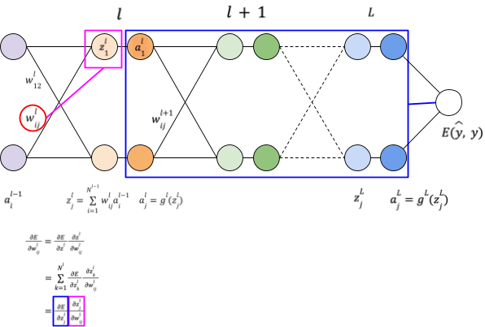

Derivatives, chain rule and backpropagation
This post is a brief summary of how derivatives and chain rule are defined for scalar functions and vector-valued functions with univariate or multivariate inputs.
Derivatives
Univariate scalar function
For a univariate scalar function, the derivative is simply defined as the derivative of the function.

\(\frac{df}{d\theta} \in R\)
Notes
\(f:\ R \rightarrow R\), \(\theta \in R,\ f(\theta) \in R\)
Multivariate scalar function

For a multivariate scalar function, the partial derivatives of \(f:\ R^{n} \rightarrow R\) can be arranged in its gradient:
\({\nabla_{\theta}}^{T}f = \left\lbrack \frac{\partial f}{\partial\theta_{1}},\ \frac{\partial f}{\partial\theta_{2}},\ ...,\ \frac{\partial f}{\partial\theta_{n}} \right\rbrack \in R^{n}\).
The gradient is a column vector where each element is the partial derivative of \(f\) with respect to the corresponding input dimension.
Notes
\(f:\ R^{n} \rightarrow R\), \(\theta \in R^{n},\ f(\theta) \in R\)
Multivariate vector-valued function

The partial derivatives of \(f:\ R^{n} \rightarrow R^{m}\)can be arranged in its Jacobian matrix \(\frac{\partial f}{\partial\theta} \in R^{m\ \times \ n}\).
\(\frac{\partial f}{\partial\theta} \in R^{m\ \times \ n}\) contains
In its rows, \({\nabla_{\theta}}^{T}f_{i} \in R^{n}\) the transpose of the gradient of the components \(f_{i}\) of \(f\).
- Each row \(i\) contains the derivative of the component \(f_{i}\) with respect to all the input dimensions.
In its columns, \(\frac{\partial f}{\partial\theta_{j}}\) the partial derivatives of \(f\) with respect to \(\theta_{j}\).
- Each column \(j\) contains the derivation of all the components of \(f\) with respect to \(\theta_{j}\) (the input dimension \(j\)).
\(\frac{\partial f}{\partial\theta}^{T} = \left\lbrack \nabla_{\theta}f_{1},\ \nabla_{\theta}f_{2},\ ...,\ \nabla_{\theta}f_{m} \right\rbrack \in R^{n\ \times \ m}\)
When \(m = 1\)
\(f\) is a multivariate scalar function and its Jacobian is the transpose of its gradient.
When \(m = n = 1\)
\(f\) is an univariate scalar function.
Notes
\(\theta \in R^{n},\ f(\theta) \in R^{m}\)
Chain rule
Univariate scalar function
When univariate scalar functions are composed, the derivative is the product of the intermediate derivatives.

\(\frac{df}{d\theta} = \frac{df}{dz}\frac{dz}{d\theta}\)
Notes
\(\theta \in R,\ z = g(\theta) \in R\), \(g:\ R \rightarrow R\), \(f:\ R \rightarrow R\), \(z = g(\theta)\), \(f = g(z) \in R\)
Multivariate scalar function


\(f:\ R^{n} \rightarrow R\) is a multivariate scalar function. Its partial derivatives can be arranged in its gradient.
\({\nabla_{\theta}}^{T}f = \left\lbrack \frac{\partial f}{\partial\theta_{1}},\ \frac{\partial f}{\partial\theta_{2}},\ ...,\ \frac{\partial f}{\partial\theta_{n}} \right\rbrack \in R^{n}\)
For each input dimension \(\theta_{i}\), the chain rule is applied to each intermediate dimension \(z_{j}\) and the derivative is the sum over \(j\).
Thus,
\(\frac{\partial f}{\partial\theta_{i}} = \sum_{j = 1}^{m}\frac{\partial f}{\partial z_{j}}\frac{\partial z_{j}}{\partial\theta_{i}}\)
The expression of \({\nabla_{\theta}}^{T}f\) above can also be expressed with:
The Jacobian of \(z\) with respect to \(\theta\): \(\frac{\partial z}{\partial\theta} \in R^{m\ \times \ n}\)
The gradient of \(f\) with respect to \(z\): \(\nabla_{z}f \in R^{m}\)
\(\nabla_{\theta}f = \left( \frac{\partial z}{\partial\theta} \right)^{T}\nabla_{z}f\)
Notes
\(\theta \in R^{n},\ z = g(\theta) \in R^{m}\), \(z = g(\theta)\), \(g:\ R^{n} \rightarrow R^{m}\), \(f:\ R^{m} \rightarrow R\)
Backpropagation
The diagram below represents a simple neural network with layers \(l\), \(l + 1\),..., \(L\) and a loss function \(E(\widehat{y},\ y)\).

Generic form
The sections below explain how to compute the derivatives of \(E\) with respect to:
\(a^{l}\), the activation of layer \(l\)
\(z^{l}\), the value of layer \(l\) before the activation
\(w_{ij}^{l}\), the weight between neuron \(i\) of layer \(l - 1\) and neuron \(j\) of layer \(l\)
Derivative with respect to \(a^{l}\)
To compute the derivative of \(E\) with respect to \(a^{l}\), the activation of layer \(l\), we express \(E\) as the composition of \(E(z^{l + 1})\) and \(z^{l + 1}(a^{l},W^{l + 1})\):
\(E(\widehat{y},\ y) = E(...(z^{l + 1}(a^{l},W^{l + 1})))\)
\(E(a^{l})\) is thus a multivariate scalar function with intermediate variables \(z^{l + 1}\).

According to the chain rule for a multivariate scalar function, its derivative is given by its gradient:
\(\nabla_{a^{l}}\ E = \left\lbrack \frac{\partial E}{\partial a_{i}^{l}},\ ... \right\rbrack\)
where \(\frac{\partial E}{\partial a_{i}^{l}} = \frac{\partial E}{\partial z^{l + 1}}\frac{\partial z^{l + 1}}{\partial a_{i}^{l}} = \sum_{k = 1}^{N^{l + 1}}\frac{\partial E}{\partial z_{k}^{l + 1}}\frac{\partial z_{k}^{l + 1}}{\partial a_{i}^{l}}\) Multivariate chain rule
Moreover, \(z_{j}^{l} = \sum_{i = 1}^{N^{l - 1}}w_{ij}^{l}a_{i}^{l - 1}\), thus \(\frac{\partial z_{j}^{l}}{\partial a_{i}^{l - 1}} = w_{ij}^{l}\) and the expression above becomes:
\(\frac{\partial E}{\partial a_{i}^{l}} = \sum_{k = 1}^{N^{l + 1}}\frac{\partial E}{\partial z_{k}^{l + 1}}{\ w}_{ik}^{l + 1}\)

Derivative with respect to \(z^{l}\)
Similarly, we can express \(E\) as the composition of \(E(a^{l})\) and \(a^{l}(z^{l})\):
\(E(\widehat{y},\ y) = E(...z^{l + 1}(a^{l}(z^{l}),W^{l + 1})))\)
\(E(z^{l})\) is thus a multivariate scalar function and its derivative is given by its gradient:
\(\nabla_{z^{l}}\ E = \left\lbrack \frac{\partial E}{\partial z_{i}^{l}},\ ... \right\rbrack\)
Notice also that each function \(E(z_{i}^{l})\) can be expressed as the composition of \(E(a_{i}^{l})\) and \(a_{i}^{l}(z_{i}^{l})\).
Thus, the chain rule for univariate scalar functions can be applied:
\(\frac{\partial E}{\partial z_{i}^{l}} = \frac{\partial E}{\partial a_{i}^{l}}\frac{\partial a_{i}^{l}}{\partial z_{i}^{l}}\) Scalar chain rule

Derivative with respect to \(w_{ij}^{l}\)
Finally we can express \(E\) as the composition of \(E(z^{l})\) and \(z^{l}(a^{l - 1},W^{l})\):
\(E(\widehat{y},\ y) = E(...z^{l}(a^{l - 1},W^{l})))\)
\(E(W^{l})\) is thus a multivariate scalar function with intermediate variables \(z^{l}\).

According to the chain rule for a multivariate scalar function, its derivative is given by its gradient:
\(\nabla_{W^{l}}\ E = \left\lbrack \frac{\partial E}{\partial w_{ij}^{l}},\ ... \right\rbrack\)
where \(\frac{\partial E}{\partial w_{ij}^{l}} = \frac{\partial E}{\partial z^{l}}\frac{\partial z^{l}}{\partial w_{ij}^{l}} = \sum_{k = 1}^{N^{l}}\frac{\partial E}{\partial z_{k}^{l}}\frac{\partial z_{k}^{l}}{\partial w_{ij}^{l}} = \frac{\partial E}{\partial z_{j}^{l}}\frac{\partial z_{j}^{l}}{\partial w_{ij}^{l}}\) Multivariate chain rule

Moreover, \(z_{k}^{l} = \sum_{i = 1}^{N^{l - 1}}w_{ik}^{l}a_{i}^{l - 1}\)
Thus \(\frac{\partial z_{k}^{l}}{\partial w_{ij}^{l}} = 0\) for \(k \neq j\)
And the expression above becomes:
\(\frac{\partial E}{\partial w_{ij}^{l}} = \frac{\partial E}{\partial z_{j}^{l}}\frac{\partial z_{j}^{l}}{\partial w_{ij}^{l}}\)

Layer \(L\)
Derivative wrt \(a^{L}\)
\(E(\widehat{y},\ y) = E(a^{L},y)\)
\(E\) is a multivariate real value function \(E:\ R^{N^{L}} \rightarrow R\)
\(N^{l}\): number of neurons in layer \(l\)
The derivative of \(E\ wrt\ a^{L}\) is thus a gradient of dimension \(R^{N^{L}}\)
\(\nabla_{a^{L}}\ E = \left\lbrack \frac{\partial E}{\partial a_{I}^{L}},\frac{\partial E}{\partial a_{2}^{L}},\ ...,\frac{\partial E}{\partial a_{i}^{L}},\ ... \right\rbrack\) Gradient of a multivariate function
Derivative wrt \(z^{L}\)
\(E(\widehat{y},\ y) = E(a^{L}(z^{L}),y)\)
\(\nabla_{z^{L}}\ E = \left\lbrack \frac{\partial E}{\partial z_{I}^{L}},\frac{\partial E}{\partial z_{2}^{L}},\ ...,\frac{\partial E}{\partial z_{i}^{L}},\ ... \right\rbrack\) Gradient of a multivariate function
\(a_{i}^{L} = a_{i}^{L}(z_{i}^{L})\) Scalar function
\(E(\widehat{y},\ y) = E(a_{i}^{L}(z_{i}^{L}),y)\)
\(\frac{\partial E}{\partial z_{i}^{L}} = \frac{\partial E}{\partial a_{i}^{L}}\frac{\partial a_{i}^{L}}{\partial z_{i}^{L}}\) Scalar chain rule
Derivative wrt \(w_{ij}^{L}\)
\(E(\widehat{y},\ y) = E(a^{L}(z^{L}(a^{L - 1},W^{L},b^{L})))\)
\(\nabla_{W^{L}}\ E = \left\lbrack \frac{\partial E}{\partial w_{ij}^{L}},\ ... \right\rbrack\) Gradient of a multivariate function
\(\frac{\partial E}{\partial w_{ij}^{L}} = \sum_{k = 1}^{N^{L}}\frac{\partial E}{\partial z_{k}^{L}}\frac{\partial z_{k}^{L}}{\partial w_{ij}^{L}} = \frac{\partial E}{\partial z_{j}^{L}}\frac{\partial z_{j}^{L}}{\partial w_{ij}^{L}}\) Multivariate chain rule
because \(\frac{\partial z_{k}^{L}}{\partial w_{ij}^{L}} = 0\) for \(k \neq j\)
Layer \(L - 1\)
Derivative wrt \(a^{L - 1}\)
\(E(\widehat{y},\ y) = E(a^{L}(z^{L}(a^{L - 1},W^{L},b^{L})))\)
\(\nabla_{a^{L - 1}}\ E = \left\lbrack \frac{\partial E}{\partial a_{i}^{L - 1}},\ ... \right\rbrack\)
\(\frac{\partial E}{\partial a_{i}^{L - 1}} = \sum_{k = 1}^{N^{L}}\frac{\partial E}{\partial z_{k}^{L}}\frac{\partial z_{k}^{L}}{\partial a_{i}^{L - 1}} = \sum_{k = 1}^{N^{L}}\frac{\partial E}{\partial z_{k}^{L}}{\ w}_{ik}^{L}\) Multivariate chain rule
\(z_{j}^{l} = \sum_{i = 1}^{N^{l - 1}}w_{ij}^{l}a_{i}^{l - 1}\)
\(\frac{\partial z_{j}^{l}}{\partial a_{i}^{l - 1}} = w_{ij}^{l}\)
Derivative wrt \(z^{L - 1}\)
\(E(\widehat{y},\ y) = E(a^{L}(z^{L}(a^{L - 1}(z^{L - 1}),W^{L},b^{L})))\)
\(\nabla_{z^{L - 1}}\ E = \left\lbrack \frac{\partial E}{\partial z_{i}^{L - 1}},\ ... \right\rbrack\)
\(\frac{\partial E}{\partial z_{i}^{L - 1}} = \frac{\partial E}{\partial a_{i}^{L - 1}}\frac{\partial a_{i}^{L - 1}}{\partial z_{i}^{L - 1}}\) Scalar chain rule
Derivative wrt \(w_{ij}^{L - 1}\)
\(E(\widehat{y},\ y) = E(a^{L}(z^{L}(a^{L - 1}(z^{L - 1}(a^{L - 2},W^{L - 1},b^{L - 1})),W^{L},b^{L})))\)
\(\nabla_{W^{L - 1}}\ E = \left\lbrack \frac{\partial E}{\partial w_{ij}^{L - 1}},\ ... \right\rbrack\) Gradient of a multivariate function
\(\frac{\partial E}{\partial w_{ij}^{L - 1}} = \sum_{k = 1}^{N^{L - 1}}\frac{\partial E}{\partial z_{k}^{L - 1}}\frac{\partial z_{k}^{L - 1}}{\partial w_{ij}^{L - 1}} = \frac{\partial E}{\partial z_{j}^{L - 1}}\frac{\partial z_{j}^{L - 1}}{\partial w_{ij}^{L - 1}}\) Multivariate chain rule
because \(\frac{\partial z_{k}^{L - 1}}{\partial w_{ij}^{L - 1}} = 0\) for \(k \neq j\)
Layer \(l\)
Derivative wrt \(a^{l}\)
\(E(\widehat{y},\ y) = E(...(z^{l + 1}(a^{l},W^{l + 1},b^{l + 1})))\)
\(\nabla_{a^{l}}\ E = \left\lbrack \frac{\partial E}{\partial a_{i}^{l}},\ ... \right\rbrack\)
\(\frac{\partial E}{\partial a_{i}^{l}} = \sum_{k = 1}^{N^{l + 1}}\frac{\partial E}{\partial z_{k}^{l + 1}}\frac{\partial z_{k}^{l + 1}}{\partial a_{i}^{l}} = \sum_{k = 1}^{N^{l + 1}}\frac{\partial E}{\partial z_{k}^{l + 1}}{\ w}_{ik}^{l + 1}\) Multivariate chain rule
\(z_{j}^{l} = \sum_{i = 1}^{N^{l - 1}}w_{ij}^{l}a_{i}^{l - 1}\)
\(\frac{\partial z_{j}^{l}}{\partial a_{i}^{l - 1}} = w_{ij}^{l}\)
Derivative wrt \(z^{l}\)
\(E(\widehat{y},\ y) = E(...z^{l + 1}(a^{l}(z^{l}),W^{l},b^{l})))\)
\(\nabla_{z^{l}}\ E = \left\lbrack \frac{\partial E}{\partial z_{i}^{l}},\ ... \right\rbrack\)
\(\frac{\partial E}{\partial z_{i}^{l}} = \frac{\partial E}{\partial a_{i}^{l}}\frac{\partial a_{i}^{l}}{\partial z_{i}^{l}}\) Scalar chain rule
Derivative wrt \(w_{ij}^{l}\)
\(E(\widehat{y},\ y) = E(...z^{l}(a^{l - 1},W^{l},b^{l})))\)
\(\nabla_{W^{l}}\ E = \left\lbrack \frac{\partial E}{\partial w_{ij}^{l}},\ ... \right\rbrack\) Gradient of a multivariate function
\(\frac{\partial E}{\partial w_{ij}^{l}} = \sum_{k = 1}^{N^{l}}\frac{\partial E}{\partial z_{k}^{l}}\frac{\partial z_{k}^{l}}{\partial w_{ij}^{l}} = \frac{\partial E}{\partial z_{j}^{l}}\frac{\partial z_{j}^{l}}{\partial w_{ij}^{l}}\) Multivariate chain rule
because \(\frac{\partial z_{k}^{l}}{\partial w_{ij}^{l}} = 0\) for \(k \neq j\)
Notes
\(a_{i}^{l - 1}\)
\(w_{ij}^{l}\)
\(z_{j}^{l} = \sum_{i = 1}^{N^{l - 1}}w_{ij}^{l}a_{i}^{l - 1}\)
\(a_{j}^{l} = g^{l}(z_{j}^{l})\)
\(w_{12}^{l}\)
\(a_{1}^{l}\)
\(z_{1}^{l}\)
\(w_{ij}^{l + 1}\)
\(z_{j}^{l + 1}\)
\(a_{j}^{l + 1} = g^{l + 1}(z_{j}^{l + 1})\)
\(z_{j}^{L}\)
\(a_{j}^{L} = g^{L}(z_{j}^{L})\)
\(l\)
\({l + 1}^{}\)
\(L - 1\)
\(L\)